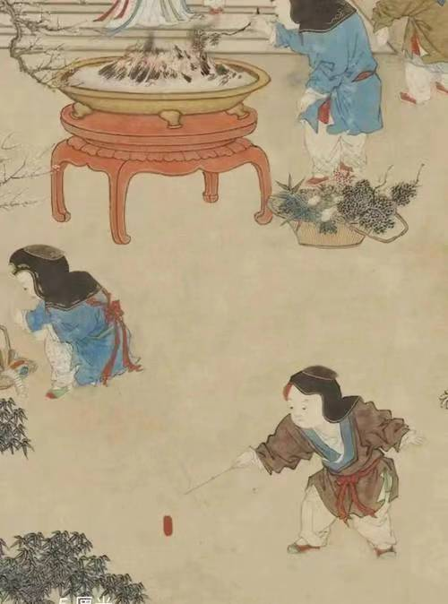
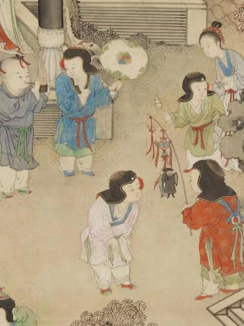
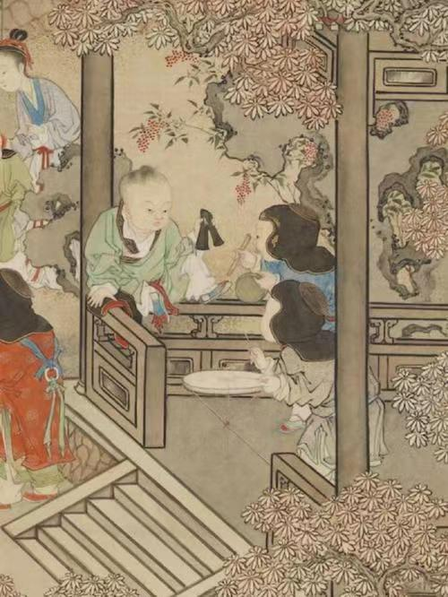

爆竹声声“画”中来，感受古画里的中国春节

《岁朝欢庆图》是一幅富有生活气息和艺术价值的画作，它通过细腻的笔触和丰富的色彩，生动地展现了过年时家庭团聚的欢乐场面，是清代绘画的精品之一。
中国春节是中国最重要的传统节日，有着悠久的历史和丰富的文化内涵。春节源于上古时代的岁首祈岁祭祀，经过演变成为集拜神祭祖、祈福辟邪、亲朋团圆、欢庆娱乐和饮食为一体的民俗大节。


中国春节是一个富有传统文化内涵和民间特色的重要节日，它不仅是中国人民最隆重、最盛大、最热闹的传统节日之一，也是中华文化的重要组成部分。
《岁朝欢庆图》
是一幅清代姚文瀚创作的纸本设色画，现藏于台北故宫博物院。这幅画主要描绘了过年时家庭团聚的欢乐场面。画面中，长辈和男女主人坐在厅堂中，观看孩子们玩耍，有的孩子在放鞭炮，有的在嬉戏，还有的家仆在端送酒菜。后院的女眷在准备年夜饭，远处的阁楼上男仆在悬挂灯笼。整个画面充满了祥和、欢乐和富贵的氛围。